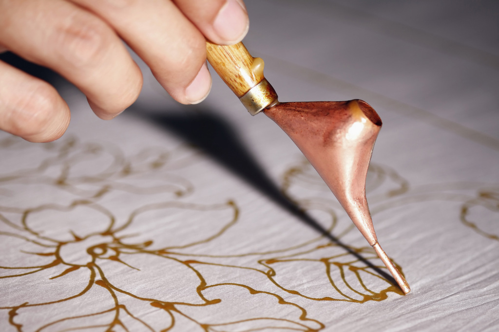

Batik is a textile dyeing method that is popularly used to create fabrics for clothing and household décor.
While somewhat similar in appearance to tie-dying, the process for how to batik is a bit more complex, with hot wax applied to fabric prior to dye application and removed via boiling after the dying is complete. This method is known as dye resistance, with the wax serving to shield certain areas from being exposed to the dye for a varied, crinkled look upon completion. Batik art can also be used to create more detailed and intricate work, including well-defined patterns and designs.
Like many ancient art forms, historians have had some trouble pinning down the precise history of batik art. However, we do know that batik originated in Java as part of a long tradition of Indonesian textile designs, and that it is a distinctly Javanese art form, even as it has made its way through other regions and continents.
What makes batik so special is both its history and its longevity. Batik is strongly rooted in the craft of Indonesian textile design, itself an honored and ongoing tradition. It is also often used to express unique ideas and spiritual beliefs, with certain patterns serving to indicate diverse notions in human history, religion, and creativity.
It’s impossible to separate batik art from the cultural heritage of both the island of Java and Indonesia as a whole. And even as the technique is shared and modified around the globe, it remains centered in its origins—and by default, it remains a practice that is as much about its cultural and spiritual significance as it is its beautiful designs
As for how to do batik yourself, Daslin outlines a complete list of the tools and materials that you’ll need. This includes: